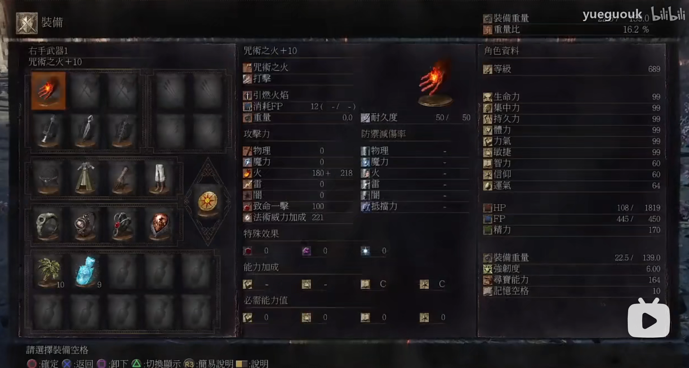

前言
本文旨在记录法师击杀不同boss的出装，出装的内容包含左右手武器、上身套装和戒指配装。
以表格的形式介绍不同boss的属性弱点，并以数值的形式展示弱点的大小，数值越大表示弱点越大。
以弱点判断对应boss应该使用的击杀技能。
另外，此处说的法师不单单指魔法类，还包含咒术、奇迹等等非物理系的攻击手段。
希拉套装
希拉套装，是环印城（DLC）装备
大块灵魂沉淀物
环印城道具
buff叠加释放顺序
- 自打鞭子+，减血。可以使用宝箱头辅助减血至触发红泪；
- 金石之誓；
- 阳光滋润；
- 内在潜力；
配装：
- 艾雷德尔蔷薇+5
灰古达
| 属性/弱 | 数值 |
|---|---|
| 魔 | 95 |
| 雷 | 114 |
| 火 | 98 |
| 暗 | 62 |
适用技能：阳光枪（贴脸施放）
阳光枪获取
todo
冰狗
| 属性/弱 | 数值 |
|---|---|
| 魔 | 76 |
| 雷 | 85 |
| 火 | 82 |
| 暗 | 127（很弱暗，理论最佳） |
适用技能：大块灵魂沉积物
配装
右手
- 伊扎里斯杖+5；
- 摩利安刀剑；
- 血癫狂+5；
左手
- 费莲诺尔圣铃+5；
- 白发护符；
- 摩利安刀剑；
头盔：覆眼面罩
戒指
- 稚嫩龙徽戒指；
- 狂吼龙徽戒指；
- 暗怪手戒指；
- 红泪石戒指；
大块灵魂沉积物获取
todo
舞娘
| 属性/弱 | 数值 |
|---|---|
| 魔 | 81 |
| 雷 | 83 |
| 火 | 82 |
| 暗 | 126（很弱暗，理论最佳） |
适用技能：追踪者+大块灵魂沉积物
配装
同冰狗一致。
妖王
| 属性/弱 | 数值 |
|---|---|
| 魔 | 60 |
| 雷 | 140（极弱雷，理论最佳） |
| 火 | 80 |
| 暗 | 78 |
适用技能：阳光枪（远程）
PS：魅惑可以骗地方咒术师的buf
英雄古达
| 属性/弱 | 数值 |
|---|---|
| 魔 | 88 |
| 雷 | 112（弱雷，理论最佳） |
| 火 | 90 |
| 暗 | 95 |
适用技能：弹反+阳光枪（贴脸）
猎龙铠甲
| 属性/弱 | 数值 |
|---|---|
| 魔 | 76 |
| 雷 | 28 |
| 火 | 80（略弱火，理论最佳） |
| 暗 | 32 |
适用技能：结晶枪
配装
右手
- 宫廷魔法师+10；
左手
- 白发护符；
- 老者结晶杖+5；
头盔：xx
戒指
- 稚嫩龙徽戒指；
- 狂吼龙徽戒指；
- 魔力怪戒指；
- 老者戒指+2；
大树
| 属性/弱 | 数值 |
|---|---|
| 魔 | 57 |
| 雷 | 60 |
| 火 | 105（弱火，理论最佳） |
| 暗 | 60 |
适用技能：温床残渣
配装
右手
- 咒术之火+10；
左手
- 费莲诺尔圣铃+5
- 白发护符；
- 摩利安刀剑；
头盔：希拉头冠
臂甲：希拉手套
戒指
- 大沼泽戒指；
- 魔女们的戒指；
- 火焰怪手戒指；
- 红泪石戒指；

结晶长老
| 属性/弱 | 数值 |
|---|---|
| 魔 | 60 |
| 雷 | 98 |
| 火 | 100（弱火，理论最佳） |
| 暗 | 100（弱暗，理论最佳） |
适用技能：黑焰+净化火焰
配装
右手
- 咒术送灵火+10；
左手
- 费莲诺尔圣铃+5
- 白发护符；
- xx；
头盔：覆眼面罩
臂甲：希拉手套
戒指
- 大沼泽戒指；
- 魔女们的戒指；
- 魔力怪手戒指；
- 红泪石戒指；
主教群
| 属性/弱 | 数值 |
|---|---|
| 魔 | 64 |
| 雷 | 102（弱雷，理论最佳） |
| 火 | 100 |
| 暗 | 56 |
适用技能：风暴落雷（一阶段）+阳光枪（贴脸，二阶段），诱敌头盖骨（道具）
不死队
| 属性/弱 | 数值 |
|---|---|
| 魔 | 90 |
| 雷 | 112（弱雷，理论最佳） |
| 火 | 92 |
| 暗 | 65 |
适用技能：结晶枪
霸王
| 属性/弱 | 数值 |
|---|---|
| 魔 | 76（弱魔，理论最佳） |
| 雷 | 60（贴脸阳光枪1.68伤害，等于101） |
| 火 | 72 |
| 暗 | 30 |
适用技能：阳光枪（贴脸）
老恶魔王
| 属性/弱 | 数值 |
|---|---|
| 魔 | 95 |
| 雷 | 96 |
| 火 | 22 |
| 暗 | 100（弱暗，理论最佳） |
适用技能：大块灵魂沉积物
攻击要点：远距离边攻击边往前走
尤姆
| 属性/弱 | 数值 |
|---|---|
| 魔 | 95 |
| 雷 | 112（弱雷，理论最佳） |
| 火 | 0 |
| 暗 | 100 |
适用技能：阳光枪（远程）
攻击要点：远距站桩输出
沙力万
| 属性/弱 | 数值 |
|---|---|
| 魔 | 88 |
| 雷 | 95（弱雷，理论最佳） |
| 火 | 92 |
| 暗 | 95（弱暗，理论最佳） |
适用技能：结晶枪
埃尔德里奇
| 属性/弱 | 数值 |
|---|---|
| 魔 | 35 |
| 雷 | 100 |
| 火 | 112（弱火，理论最佳） |
| 暗 | 25 |
boss部位弱点：爆头1.5倍伤害
适用技能：温床残渣
风暴龙/无名
| 属性/弱 | 数值 |
|---|---|
| 魔 | 90/76 |
| 雷 | 131/17 |
| 火 | 65/77 |
| 暗 | 100/108（弱暗，理论最佳） |
适用技能：大块灵魂沉积物
攻击压迫点：
- 先开魔力武器；
- 风龙首次降落后，出一发等风暴龙撞击大块灵魂沉积物；
- 风暴龙停稳后，再出一发；
- 打出硬直，最后补一发；
- 二阶段，补内潜+魔力武器；
- 看时机出大块灵魂沉积物。
双王子
| 属性/弱 | 数值 |
|---|---|
| 魔 | 95/53 |
| 雷 | 120/96（弱雷，理论最佳） |
| 火 | 98/98 |
| 暗 | 30/27 |
适用技能：
- 扭曲光壁：挡二阶段激光雨；
- 阳光枪：远近结合
攻击要点：墙壁打法
薪王化身
| 属性/弱 | 数值 |
|---|---|
| 魔 | 81 |
| 雷 | 95（弱雷，理论最佳） |
| 火 | 65 |
| 暗 | 85 |
适用技能：
- 阳光枪（远程）；
- 结晶枪；